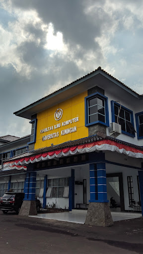

Sejarah

Fakultas Ilmu Komputer Universitas Kuningan (UNIKU) merupakan salah
satu fakultas yang memiliki peran penting dalam pengembangan ilmu
pengetahuan dan teknologi di wilayah Kuningan dan sekitarnya.
Sejarah berdirinya fakultas ini tidak dapat dipisahkan dari sejarah
berdirinya UNIKU secara keseluruhan. Awalnya, UNIKU didirikan
sebagai perwujudan dari semangat untuk meningkatkan kualitas sumber
daya manusia di Kuningan.
Seiring berjalannya waktu, melihat perkembangan pesat teknologi
informasi, UNIKU kemudian mendirikan Sekolah Tinggi Manajemen
Informatika dan Komputer (STMIK) Kuningan. STMIK ini kemudian
menjadi cikal bakal dari Fakultas Ilmu Komputer UNIKU seperti yang
kita kenal sekarang. Dengan visi untuk menjadi mitra masyarakat
bisnis dalam mengembangkan pemanfaatan teknologi informasi, Fakultas
Ilmu Komputer UNIKU terus berupaya menghasilkan lulusan yang
kompeten dan siap menghadapi tantangan dunia kerja yang semakin
kompleks.
Hingga saat ini, Fakultas Ilmu Komputer UNIKU telah banyak
memberikan kontribusi bagi masyarakat, baik melalui penelitian,
pengabdian masyarakat, maupun menghasilkan lulusan yang berkualitas.
Fakultas ini juga aktif menjalin kerjasama dengan berbagai pihak,
baik industri maupun akademisi, untuk terus mengembangkan ilmu
pengetahuan dan teknologi di bidang informatika. Dengan berbagai
prestasi yang telah diraih, Fakultas Ilmu Komputer UNIKU terus
berkomitmen untuk menjadi pusat unggulan dalam bidang pendidikan dan
penelitian di bidang ilmu komputer.
Visi - Misi

Visi Fakultas Ilmu Komputer
Terwujudnya Fakultas Ilmu Komputer Universitas Kuningan sebagai
fakultas andal yang unggul dalam penyelenggaraaan Tri Darma
Perguruan Tinggi di Wilayah Jawa Barat pada tahun 2032
Misi Fakultas Ilmu Komputer
-
Menyelenggarakan pendidikan, penelitian, dan pengabdian pada
masyarakat secara terpadu berdasarkan pada kaidah-kaidah
pendidikan modern.
-
Membina dan mengembangkan kehidupan akademik yang sehat sesuai
dengan nilai-nilai dan norma-norma yang berkembang di dunia
akademik.
-
Menyelenggarakan riset-riset ilmiah yang tidak saja mampu
mendorong pertumbuhan ilmu dan teknologi lagi juga dapat menjamin
kebutuhan dunia industri dan bisnis yang berkembang sangat pesat
dewasa ini.
-
Menjadi sarana terjadinya pertemuan-pertemuan ilmiah baik lingkup
lokal maupun nasional sehingga dapat memberikan warna dan
kontribusi yang nyata dalam kemajuan ilmu dan teknologi.
-
Melayani, memandu, dan menyatu dengan masyarakat dalam upaya ikut
serta mewujudkan masyarakat baru Indonesia yang adil dan makmur.
-
Menjadi sarana penggodokan generasi muda sehingga mampu mandiri,
profesional, dan berakhlak mulia yang bermanfaat bagi dirinya,
masyarakat, bangsa, dan negara.
-
Meningkatkan budaya baca dalam upaya mewujudkan generasi yang
memiliki wawasan yang luas dalam bidang IPTEK sesuai dengan minat
kajiannya
Tujuan Fakultas Ilmu Komputer
-
Menyiapkan peserta didik menjadi kader bangsa yang mandiri,
profesional, dan berakhlak mulia.
-
Mempersiapkan peserta didik menjadi ilmuwan muda bidang
informatika yang memiliki intergritas dan deidikasi yang tinggi
serta memiliki komitmen untuk mengembangkan ilmu dan teknologi.
-
Mempersiapakan peserta didik yang mampu menganalisis dan
memecahkan masalah, berinovasi dan berimprovisasi, serta memilii
daya saing yang tinggi dalam lingkup lokal maupun nasional dalam
bidang IT.
-
Mengembangkan ilmu dan teknologi khususnya dalam bidang
informatika serta mengupayakan penggunaannya untuk meningkatkan
taraf kehidupan masyarakat.
-
Melayani dan mendampingi pemerintah dalam pelaksanaan pembangunan
di segala bidang dengan memanfaatkan teknologi informasi.
-
Menjadi mitra masyarakat bisnis dalam upaya mengembangkan
organisasi dan pemanfaatan teknologi informasi dalam rangka
efektifitas dan efesiensi.
Melayani dan mendampingi masyarakat untuk tumbuh menjadi masyarakat
yang cerdas, kreatif dan mandiri.
Program Studi Fakultas Ilmu Komputer
Dengan kurikulum yang up-to-date dan didukung oleh tenaga pengajar
yang kompeten, Fakultas Ilmu Komputer Universitas Kuningan
menawarkan 4 pilihan program studi yang akan mengantarkan Anda
menjadi seorang ahli di bidang teknologi informasi.
Program Studi Sistem Informasi S1
Visi
Terwujudnya program studi system informasi sebagai program
studi yang handal dan unggul dalam penyelenggaraaan Tri Darma
Perguruan Tinggi unggul di bidang rekayas asistem informasi di
Wilayah Jawa Barat pada tahun 2032
Misi
-
Menyelenggarakan pendidikan berbasis system informasi sesuai
dengan dinamika kebutuhan masyarakat.
-
Melaksanakan penelitian dan pengabdian pad amasyarakat dalam
bidang system informasi.
-
Mengembangkan kehidupan akademik yang sehat sesuai dengan
nilai-nilai dan norma-norma yang berkembang di dunia akademik.
-
Menjalin kerjasama secara institusional dengan lembaga lain di
bidang system informasi untuk pengembangan dan pemberdayaan
program studi.
- Ikut serta memberdayakan masyarakat.
Kompetensi Umum
- Memperbaiki proses-proses organisasional.
-
Memanfaatkan peluang yang tercipta dari inovasi teknologi.
-
Memahami dan mendokumentasikan kebutuhan-kebutuhan informasi.
-
Merancang dan mengelola arsitektur informasi organisasi
(enterprise architecture).
-
Mengidentifikasi dan mengevaluasi solusi teknologi informasi dan
berbagai alternative sumbernya
- Mengamankan data dan infrastruktur organisasi.
-
Memahami, mengelola, danmengendalikanresikoteknologiinformasi.
Program Studi Teknik Informatika
Visi
Terwujudnya program studi yang handal dan unggul dibidang
teknologi informasi yang memiliki standar kompetensi dan
menghasilkan tenaga-tenaga ahli IT yang cerdas dan berbudi luhur
di wilayah Jawa Barat pada tahun 2032
Misi
-
Menyelenggarakan pendidikan bermutu tinggi dibidang Teknik
Informatika bagi masyarakat sebagai sarana untuk menghasilkan
lulusan yang bermoral, berkualitas, professional, kompeten,
sesuai dengan kebutuhan standar industry, profesi dan
perkembangan ilmu pengetahuan dan teknologi saat ini dan yang
akan datang.
-
Memenuhi kebutuhan masyarakat melalui pengenalan, pengalihan dan
penyebaran ilmu pengetahuan dan teknologi yang relevan dengan
ilmu teknik informatika untuk mencapai kualitas standar program
studi dengan berfokus pada integritasi teknologi informasi dalam
setiap aspek kehidupan manusia.
-
Menemukan, mengembangkan dan menciptakan karya di bidang
informatika serta menyebarkan ilmu pengetahuan dan teknologi
demi kepekaan dan kepedulian terhadap kehidupan masyarakat.
-
Menggalang penelitian untuk berperan aktif dalam peningkatan
kemajuan ilmu pengetahuan dan teknologi, khususnya bidang
informatika.
-
Menumbuhkan budaya diskusi dlam pelaksanaan Tri Dharma perguruan
Tinggi
Kompetensi Umum
-
Kemampuan untuk merancang dan melakukan eksperimen, menganalisis
dan menginterprestasikan suatu perangkat lunak berbasis database
dan system informasi untuk menyelesaikan persoalan teknologi
informasi melalui metodologi mutakhir diberbagai bidang seperti
pendidikan, perbankan, telekomunikasi, manufaktur, atau industri
lainnya.
-
Mampu mengembangkan system sesuai dengan fokus pada bidang
keahlian yang dilakukan secara mandiri maupun bersama-sama,
smart application untuk keperluan industri (soft computing) dan
mengembangkan aplikasi mobile beserta infrastruktur pendukungnya
(mobile computing).
-
Membangun atau merancang system yang mampu mengakses informasi
secara cepat, tepat dan akurat di sector industry maupun tempat
mereka bekerja di masa depan. Khususnya merancang bangun
perangkat lunak berbasis mobile, anatarmuka perangkat keras dan
komunikasi data.
-
Kemampuan berkomunikasi yang efektif dalam bahasa inggris Lisan
maupun Tulisan.
-
Kemampuan dan kapasitas pengetahuan yang cukup sebagai ahli
teknik profesional untuk menjalankan tanggungjawab social,
budaya, lingkungan, global, dan bisnis, serta peduli terhadap
prinsip dan kebutuhan pembangunan berkelanjutan.
-
Kemampuan untuk memanfaatkan teknik, keahlian dan peralatan atau
tools modern yang diperlukan untuk menyelesaikan tugas dan
tanggungjawabnya.
-
Mengimplementasikan rancangan system secara efisien dan efektif
di dalam sebuah software yang dirancang untuk organisasi atau
tatanan komunitas lainnya sehingga mendukung tercapainya visi
dan misi organisasi yang bersangkutan.
Program Studi Desain Komunikasi Visual
Visi
Menjadi program studi desain komunikasi visual yang unggul dalam
bidang industri multimedia, periklanan dan grafis yang berbasis
teknologi iformasi dan memiliki komitmen yang tinggi terhadap
pemberdayaan masyarakat tahun 2032
Misi
-
Mengembangkan dan mengimplementasikan pendidikan Desain
Komunikasi Visual berbasis teknologi informasi di bidang
industri multimedia, periklanan dan desain grafis, yang kreatif
serta dapat terintegrasi secara keilmuan dengan disiplin ilmu
lain.
-
Mengembangkan penelitian dan pengabdian masyarakat, sebagai
bagian dari pengembangan keilmuan yang mempunyai nilai kebaruan
yang bermanfaat bagi kebutuhan industri dan masyarakat.
Kompetensi Umum
-
Menghasilkan lulusan (Sarjana Desain) yang kreatif dan berjiwa
entreupreneur.
-
Mengeksplorasi dan memecahkan permasalahan di bidang komunikasi
visual dengan penekanan pada sisi inovasi dan integrasi keilmuan
dengan menghasilkan karya penelitian dan produk inovasi.
Program Studi Manajemen Informatika
Visi
Mewujudkan program studi yang unggul dalam bidang teknologi
informasi dan komunikasi dan bermutu berbasis entrepeunership
yang diseleraskan dengan perkembangan teknologi informasi dan
komunikasi serta memiliki komitmen yang tinggi terhadap
pemberdayaan masyarakat pada tahun 2032
Misi
-
Menyelenggarakan pendidikan, penelitian, dan pengabdian pada
masyarakat khususnya dalam penerapan teknologi informasi.
-
Memberi bekal pengetahuan teori dan praktek kepada peserta didik
agar memiliki kompetensi yang tinggi dalam bidang
pemrograman-pemrograman aplikasi untuk pemanfaatn sistem
informasi.
-
Menyelenggarakan riset-riset ilmiah dibidang teknologi informasi
pada dunia pendidikan, industri, bisnis dan akuntansi yang
senantiasa berkembang dengan sangat pesat.
-
Menjadi sarana terjadinya pertemuan-pertemuan ilmiah baik
lingkup lokal, nasional sehingga dapat memberikan kontribusi
yang nyata dalam kemajuan teknologi informasi.
-
Melayani, memandu, dan menyatu dengan masyarakat dalam upaya
ikut serta mewujudkan masyarakat baru Indonesia yang berwawasan
luas, dinamis, dan modern.
-
Menjadi sarana penggodokan peserta didik sehingga menghasilkan
tenaga-tenaga ahli yang mempunyai kompetensi yang tinggi dalam
bidang pemrograman-pemrograman aplikasi untuk sistem informasi,
kreatif, inovatif, mandiri, profesional, dan mampu bersaing
dipasar global dengan para lulusan perguruan tinggi lain yang
lebih terkemuka di indonesia, serta berakhlak mulia yang
bermanfaat bagi dirinya, masyarakat,bangsa, dan negara.
Kompetensi Program Studi
-
Mampu bekerja sama, berkomunikasi, dan berinovatif dalam
pekerjaannya.
-
Mampu melakukan proses evaluasi diri terhadap kelompok kerja
yang berada dibawah tanggung jawabnya, dan mengelola
pengembangan kompetensi kerja secara mandiri.
-
Mampu melakukan troubleshooting untuk menentukan kasus dan
memperbaiki error serta memutuskan apa yang harus dilakukan.
-
Menjaga dan mengelola jaringan komputer dan lingkungan komputasi
terkait termasuk perangkat keras komputer, perangkat lunak
sistem, perangkat lunak aplikasi, dan semua konfigurasi.
-
Membantu Manajemen Teknologi Informasi dalam merancang dan
membangun jaringan.